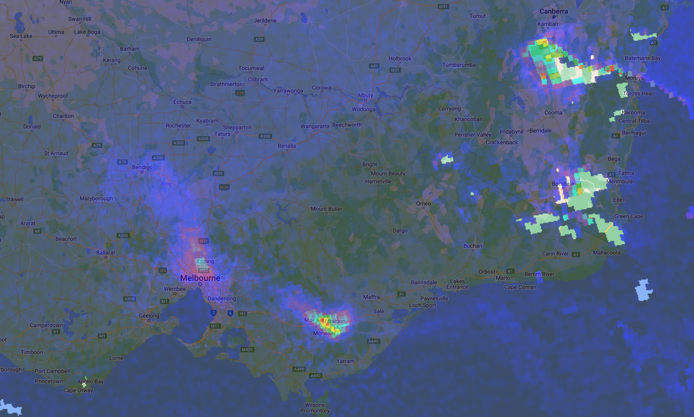
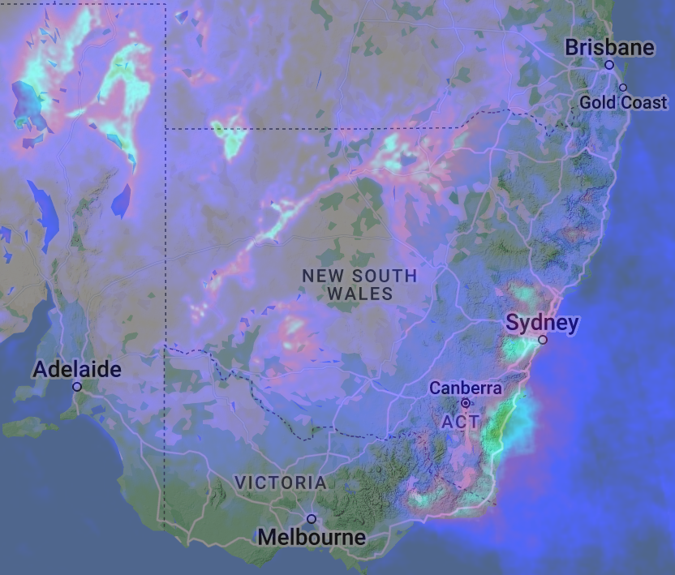
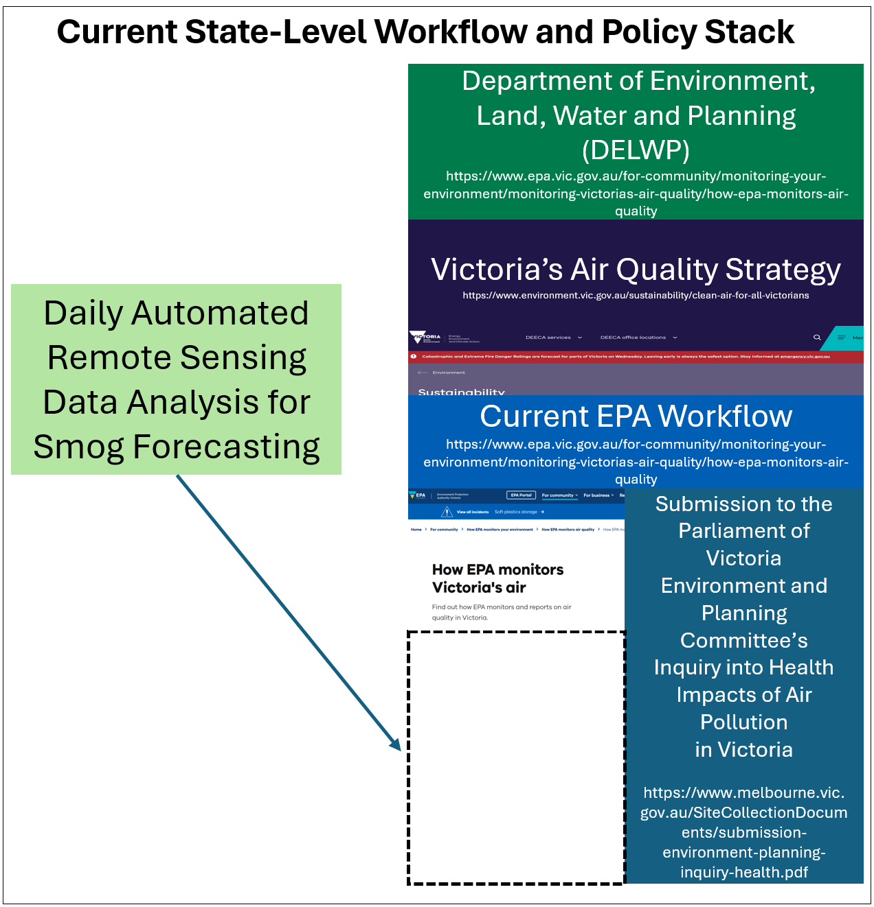

Week 4 Remote Sensing and Policy Implications
Remote sensing and policy implications are intricately linked, playing a pivotal role in addressing some of our most pressing challenges. The United Nations Sustainable Development Goals (UN SDGs) outline numerous objectives for urban and built environments. Recently, mountain and bush fires have significantly deteriorated the air quality in major parts of the world, to make the matters worse, the smogs can travel far from time to time, threatening the health and quality of life for a great many residents.
Consequently, my case study, centred around Melbourne and its adjacent suburbs, aims to explore the integration of remote sensing for wildfire monitoring with urban air quality forecasting. This short study intends identify the potentials of integrating remote sensing into the current pipelines, thus provide policymakers and city councils with sufficient lead time to implement measures before smog affects residential areas. Potential policy integration could include distribution of air filtration systems, masks or the evacuation of affected populations. This pilot study seeks to investigate the policy ramifications of establishing such operational frameworks.
Wildfire Monitoring for Air Quality with Remote Sensing
Case Study and Policy Implications for the Greater Melbourne Area
The goal for this short study is to explore the forecasting of smoke plume bush-fire to areas that may impact the residents and discuss policy implications. Focusing on Melbourne, with framework that includes remote sensing, intended to be integrated with sustainable future planning inspired the use of remote sensing for monitoring urban growth in Perth, WA. (MacLachlan et al. 2017)
As for the imagery, Sentinel 5P from Copernicus Program is offering sufficient resolutions. In terms of spatial resolution it covers up to a 5.5km x 3.5km area, Sentinel 5P also offers a daily global coverage, (revisits less than one day) providing enough temporal resolution. As for spectral resolution, Sentinel 5P offers accurate quantification of various atmospheric gases and pollutants including carbon monoxide(CO), nitrogen dioxide (NO2), ozone(O3), formaldehyde(HCHO), sulfur dioxide(SO2), methane(CH4) and aerosols thanks to its extensive spectral coverage which includes UV, VIS and NIR bands.(Victoria 2019) It also possesses radiometric resolution at satisfactory level which enables the sensors on-board to distinguish different levels of signal intensity. The following is a video summary of the 2019 to 2020 bushfire air pollutant spread in Australia which resulted in low AQI in a great portion of the country’s residential areas not to mention destruction of many homes. (Tiernan and O’Mallon 2020)
Utilizing the Sentinel 5P data(Trinder and Liu 2020), this proposed project aligns with the following UN Sustainable Development Goals:
| Contribution (by Implementing Proposed Research/Development) | SDG | Description |
|---|---|---|
| Contribute to the prevention of human respiratory damage caused by smogs from burning forest. | UN SDG 3 | Good Health and Well-being, ensure people lives a healthy environment, promote well-being for all ages. |
| Proper monitoring and timely alerts, contributes to the enhancement of the built environment and overall community safety. | UN SDG 11 | Sustainable, resilient, inclusive and safe cities/communities. |
| Actively monitoring wild fires and smogs produced can offer insights and guidance for mitigation. | UN SDG 13 | Take urgent actions against climate change. |
| This proposal can contribute to the sustainable of land resources and terrestrial ecosystems. | UN SDG 15 | Sustainable management of land, forests and biodiversity. |
NASA’s Fire Information for Resource Management System (FIRMS) can also be integrated into the workflow. Using remote sensing for monitoring wild fire monitoring has long been proposed for Eastern Australia. (Milne 1986)
By extracting values from the daily Sentinel 5p data, we can monitor the wildfire and combine the ground weather/air quality monitoring data, to determine how the polluted air will impact the densely populated area (mapping the air monitoring data over the building footprint in Australia) thus, provide intervention implications for distributing devices and masks. In the literature, similar was workflow proposed for monitoring wild fires in the US. (Kochanski et al. 2021)

As in many regions of the world, residential AQI can be dramatically affected by wildfires, therefore, it is crucial to have a integrated pipeline for the monitoring of harmful aerosol spike which is also incorporated into the policy stack and is dedicated with ample resources.

Current Policy Stack and Wofkflow
As a vibrant metropolis in the state of Victoria, the local councils and state government around the Greater Melbourne Area, has implemented air quality policies aimed at safeguarding the health and well-being of their residents.

Environment Protection Amendment Act 2018: This act introduces a general environmental duty that requires proactive risk management to prevent harm to public health and the environment, including air quality impacts.
EPA Victoria’s AirWatch: A platform that offers real-time air quality information to the public, including an AQI that categorizes air quality levels and provides health advisories, enabling residents to make informed decisions about outdoor activities.
Proposed Mitigation
In light of this,this proposal aims to integrate state-of-art remote sensing technology into Melbourne’s current air quality management workflow, offering a multifaceted approach to mitigate air pollution risks:
Establishment of High-Frequency Sentinel Points: By setting up strategically positioned sentinel points equipped with remote sensing capabilities, we propose to advance the forecasting of Points of Interest (POIs) for early air quality alerts. This system will enable the detection of potential air quality deterioration before polluted air approaches the residential vicinity, allowing for proactive measures to be taken.
Deployment of Air Filtration and Respiratory Device Stations: Recognizing the immediate health impacts of poor air quality, we plan to establish stations across key urban and suburban locations for the distribution of air filtering and respiratory devices. These stations will ensure that citizens have timely access to necessary protective equipment against smoke and pollutants. Ideally, the station can be established inside local hospitals or clinics.
Enhanced Emergency Evacuation Planning: Agent-Based Modeling (ABM) methods alongside satellite imagery analysis will be employed to refine emergency evacuation planning. By identifying optimal evacuation routes and safe zones in advance, the updated workflow will facilitate efficient relocation strategies during smoky conditions, ensuring public safety and minimizing chaos.
Implementation and Emergency Planning Techniques
Our methodology leverages state-of-the-art remote sensing technology, including the analysis of satellite data from platforms such as Sentinel-5P, to offer unparalleled insights into air quality dynamics. The integration of ABM methods will further enhance our predictive capabilities, allowing for the simulation of various scenarios and the formulation of robust emergency response strategies.
Conclusion
By integrating advanced remote sensing technology into the city’s existing workflow, we aim not only to protect the well-being of Melbourne’s citizens but also to set a new standard for urban air quality management worldwide.
Literature Review
The exploration of policy and global agenda, combined with the review of current literature, made this week’s class and practical a proper warm-up for the group assessment. I have also combed through the literature and policy base briefly, to further analyze the interplay between remote sensing, policy and air quality.
Early in the 2000s, studies have proposed the potentials of incorporating remote sesing into the air quality policy frameworks. (Veefkind et al. 2007) Aside from the potential of forecasting emergency air pollution caused by wildfires or other incidents, recent literature has also indicated the transformative potential of remote sensing in air quality monitoring.(Sokhi et al. 2022) Other researchers has highlighted the application of remote sensing for timely data on aerosol pollutants. (Gupta et al. 2006) therefore, the integration of remote sensing air quality monitoring, could also contribute to the approximate verification and robust back-up for ground air quality data collection. (Bechle, Millet, and Marshall 2013) To generalize the impact of urban air quality monitoring with remote sensing, researchers also suggested that remote sensing can be incorporated in the long-term exposure assessment of air pollutants (Van Donkelaar et al. 2015) and be utilized to discover hidden air pollution patterns. (Verma et al. 2023) Although the current policy frameworks around the world are including satellite images into air quality monitoring, the spatial and temporal resolution of such observation data could be further improved, offering policy makers and environmental agencies more detailed and timely knowledge on the air quality. Potential research directions could explore finer pollution detection,(Huang et al. 2022) establishing near real-time or real time data acquisitions,(Geng et al. 2021) compatibility or fusion with other key environmental metrics monitoring systems. (Prados et al. 2010) and a more hybrid approached in terms of acquiring air quality data such as combining the satellite observations with UAV images. (Budde et al. 2017)
Reflection
The implications of such research are profound for policy-making, it can even contribute to a more data-driven paradigm shift as the data-driven planning. By leveraging remote sensing data, policymakers can benefit from timely and accurate information on the hazardous smoke plumes, their potential movement patterns and impact on overall urban air quality. From the test use of Sentinel 5P data shown above, we can conclude that the resolution overall is inadequate for predicting the movement of the pollutant clusters in the air. In addition, the remote sensing detection and forecasting, ought to be a value-addition or redundant measure to existing air quality measurement and monitoring frameworks and policy instruments. It is also obvious that integrating remote sensing data with real-time sensor data or other air quality monitoring data can pose technique challenges.
In summary, the exploration of air quality monitoring, policy interventions, and remote sensing, opens up a new realm of environmental protection and policy implementation. It exemplifies the innovation synergy between technology and policy by introducing remote sensing data analysis to both local and global environmental strategies.
Concept Illustration Video
As a rather off-track side-quest, I also generated this with text-prompt on Stable Video:
It is not a geographically accurate depiction as the forest distribution is clearly off, but as a measure for quickly formatting initial illustrations the current development is beyond my expectation.